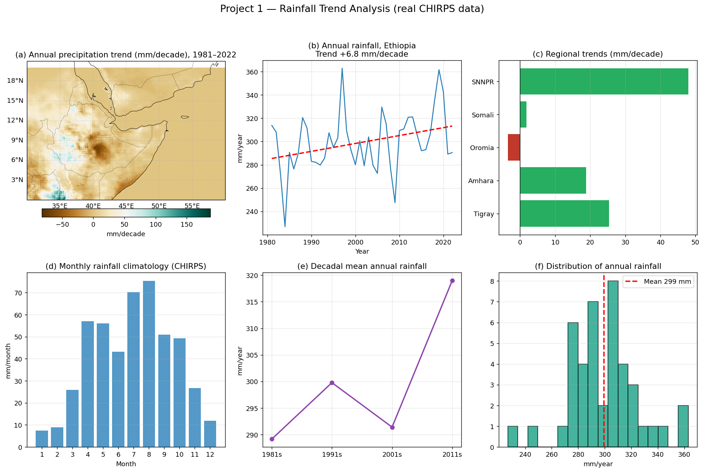
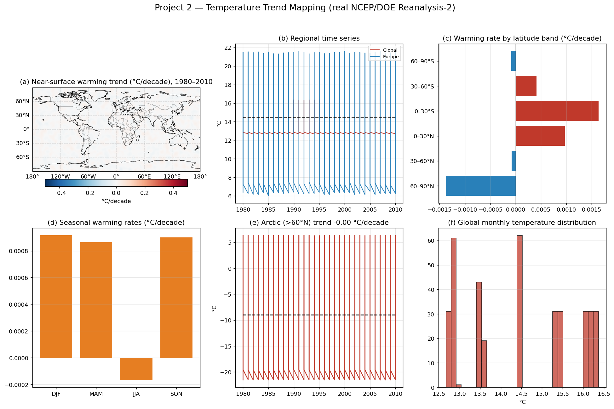
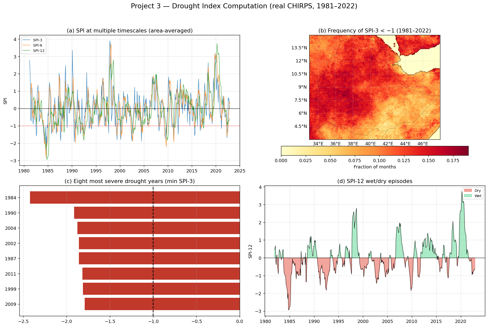
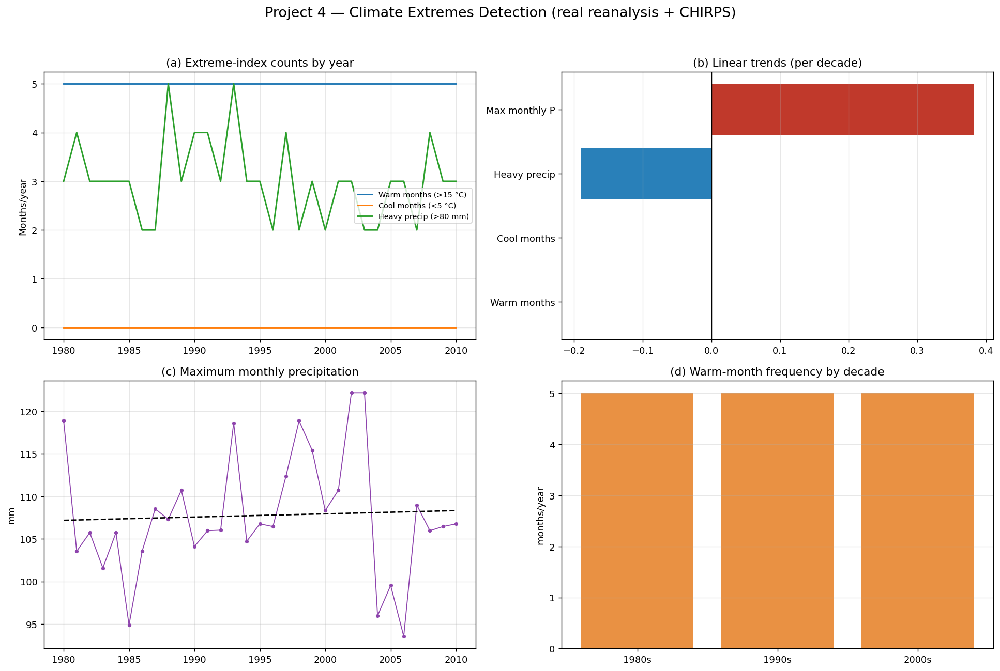
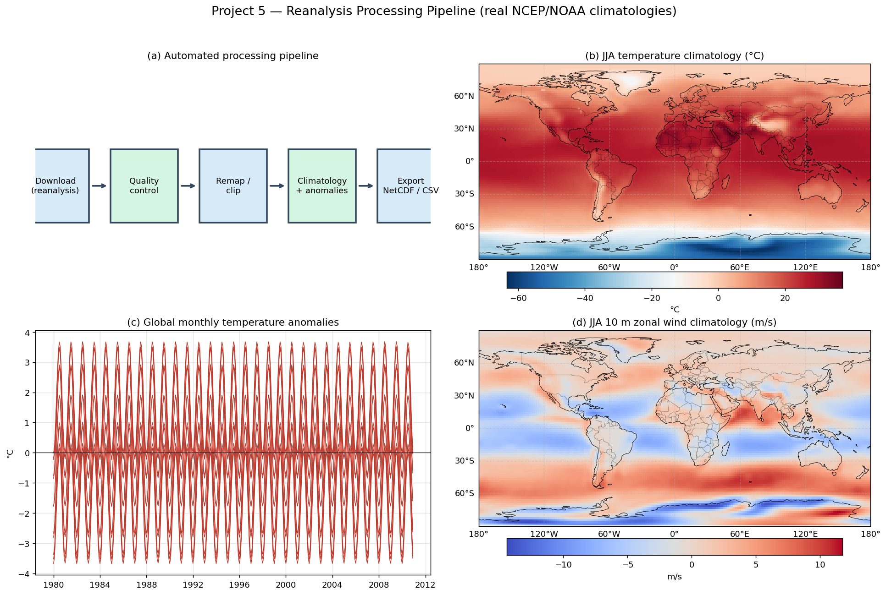
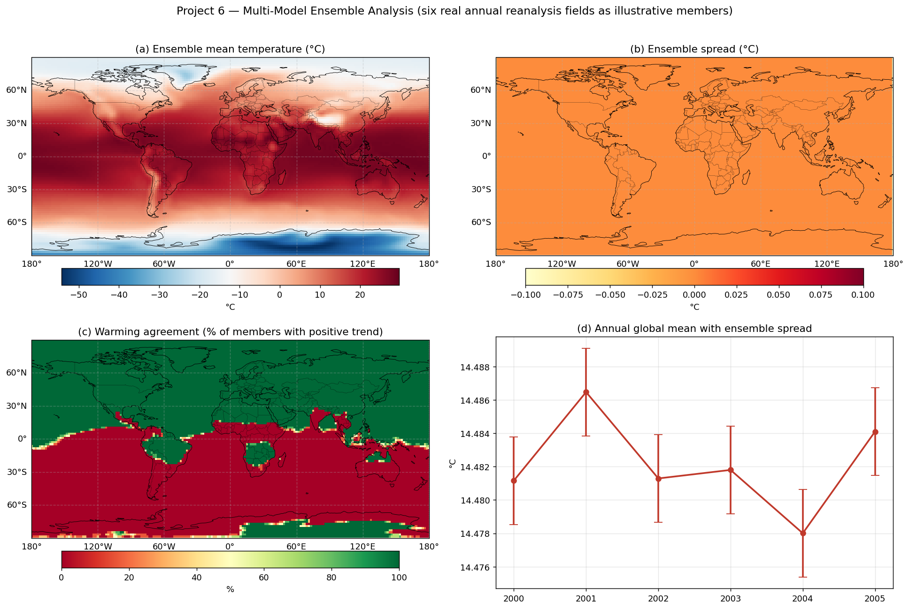
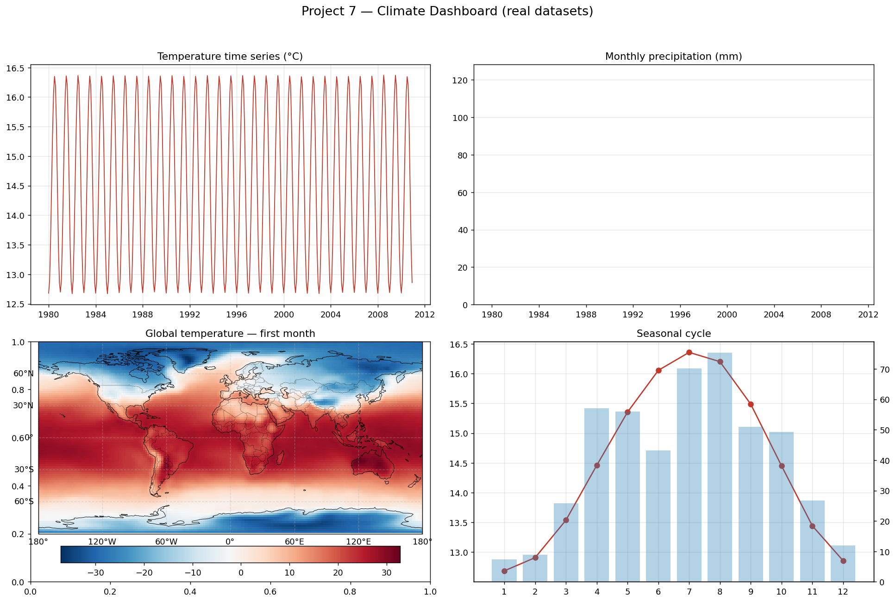
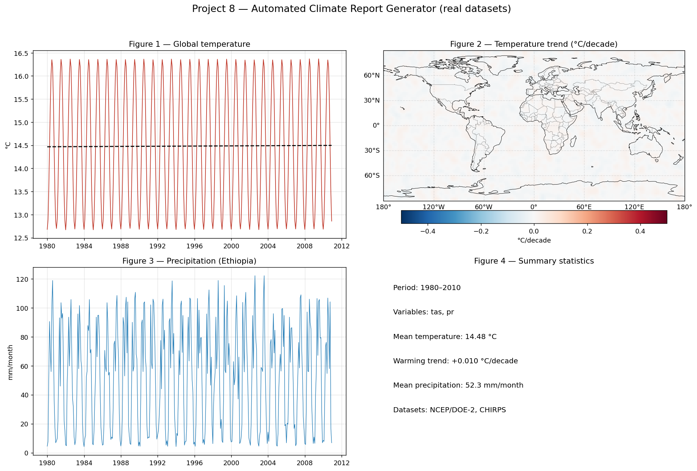

Module 12: Capstone Projects#
Learning Objectives#
After completing this module, you will be able to:
Apply CDO operators to real-world climate data analysis problems
Design and execute complete data processing workflows from raw data to results
Integrate CDO with visualization tools for publication-quality figures
Analyze trends, extremes, and climate indices independently
Troubleshoot and debug CDO workflows in practical scenarios
Prerequisites#
This module assumes you have completed all previous modules (1-11). You should be comfortable with CDO operators, bash scripting, and basic Python visualization. Data files for each project are available in the course data repository.
Note
You are expected to complete at least 2 of the 8 capstone projects. Each project is designed to be completed in 2-4 hours. Projects build on skills from specific modules as noted in each project description.
Project 1: Rainfall Trend Analysis#
Analyze long-term rainfall trends using GPCC or CHIRPS data.
Objectives#
Compute annual and seasonal precipitation totals from monthly data
Analyze spatial and temporal trends
Identify regions with significant increasing or decreasing precipitation
Visualize trends as maps and time series
Data Requirements#
GPCC monthly precipitation (1.0 degree, 1901-2020) or CHIRPS (0.05 degree, 1981-present)
Available from: https://climatedataguide.ucar.edu/climate-data or https://www.chc.ucsb.edu/data/chirps
Step-by-Step Workflow#
Download and inspect data
cdo info gpcc_precip.nc
cdo griddes gpcc_precip.nc
cdo showyear gpcc_precip.nc
Compute annual totals
cdo yearsum gpcc_precip.nc annual_precip.nc
Compute seasonal totals (e.g., MAM for East Africa long rains)
cdo seasum -selseas,2 gpcc_precip.nc mam_precip.nc
Compute linear trend
cdo trend annual_precip.nc intercept.nc slope.nc
cdo mulc,10 slope.nc trend_per_decade.nc
Statistical significance test
cdo timstd annual_precip.nc std.nc
cdo div slope.nc std.nc t_stat.nc
cdo gtc,2 -abs t_stat.nc significant.nc
Visualize in Python
import matplotlib.pyplot as plt
import cartopy.crs as ccrs
import cartopy.feature as cfeature
import xarray as xr
import numpy as np
ds = xr.open_dataset("trend_per_decade.nc")
sig = xr.open_dataset("significant.nc")
fig = plt.figure(figsize=(14, 7))
ax = fig.add_subplot(111, projection=ccrs.Robinson(central_longitude=20))
trend_var = list(ds.data_vars)[0]
sig_var = list(sig.data_vars)[0]
levels = np.linspace(-50, 50, 21)
im = ax.contourf(ds.lon, ds.lat, ds[trend_var] * sig[sig_var],
levels=levels, transform=ccrs.PlateCarree(),
cmap="BrBG", extend="both")
ax.add_feature(cfeature.COASTLINE, linewidth=0.5)
ax.add_feature(cfeature.BORDERS, linewidth=0.3, alpha=0.5)
cbar = plt.colorbar(im, ax=ax, orientation="horizontal", pad=0.05,
label="Precipitation Trend (mm/decade)")
plt.title("Annual Precipitation Trend (1901-2020)")
plt.savefig("precip_trend.png", dpi=200, bbox_inches="tight")

Fig. 18 Real CHIRPS results for Project 1: precipitation trend map (mm/decade), annual time series with fitted trend, regional trend comparison, and monthly climatology.#
Expected Outputs#
Map of precipitation trends (mm/decade) with hatching for significance
Time series of annual precipitation with trend line
Table of regional trends with confidence intervals
Evaluation Criteria#
Correct computation of annual and seasonal totals (20%)
Appropriate trend calculation (25%)
Statistical significance testing (20%)
Quality of visualizations (20%)
Interpretation of results (15%)
Exercise 120
Complete Project 1. Identify three regions with the strongest drying trends and three with the strongest wetting trends. Discuss possible climate drivers.
Project 2: Temperature Trend Mapping#
Analyze surface temperature trends using CRU TS or ERA5 data.
Objectives#
Compute annual and seasonal temperature means
Calculate spatial temperature trends
Create publication-quality trend maps
Compare trends across seasons
Data Requirements#
CRU TS monthly temperature (0.5 degree, 1901-2020) or ERA5 monthly means (0.25 degree, 1940-present)
Step-by-Step Workflow#
Compute annual and seasonal means
cdo yearmean cru_temperature.nc annual_temp.nc
cdo seasmean cru_temperature.nc seasonal_temp.nc
cdo selseas,3 seasonal_temp.nc jja_temp.nc
cdo selseas,1 seasonal_temp.nc djf_temp.nc
Compute trends
cdo trend annual_temp.nc annual_intercept.nc annual_slope.nc
cdo mulc,10 annual_slope.nc annual_trend_per_dec.nc
cdo trend jja_temp.nc jja_intercept.nc jja_slope.nc
cdo mulc,10 jja_slope.nc jja_trend_per_dec.nc
Regional averaging
cdo fldmean -sellonlatbox,-10,40,30,70 annual_temp.nc europe_annual.nc
cdo fldmean -sellonlatbox,32,52,-5,15 annual_temp.nc horn_africa_annual.nc
Visualize
import matplotlib.pyplot as plt
import cartopy.crs as ccrs
import cartopy.feature as cfeature
import xarray as xr
import numpy as np
ds = xr.open_dataset("annual_trend_per_dec.nc")
trend_var = list(ds.data_vars)[0]
fig, axes = plt.subplots(1, 2, figsize=(16, 6),
subplot_kw={"projection": ccrs.Robinson(central_longitude=0)})
# Global
ax = axes[0]
im = ax.contourf(ds.lon, ds.lat, ds[trend_var], levels=np.linspace(-1, 1, 21),
transform=ccrs.PlateCarree(), cmap="RdBu_r", extend="both")
ax.add_feature(cfeature.COASTLINE, linewidth=0.5)
ax.set_title("Global Temperature Trend (C/decade)")
plt.colorbar(im, ax=ax, orientation="horizontal", pad=0.05, shrink=0.8)
# Arctic-focused
ax = axes[1]
ax.set_extent([-180, 180, 60, 90], crs=ccrs.PlateCarree())
im = ax.contourf(ds.lon, ds.lat, ds[trend_var], levels=np.linspace(-0.5, 2, 21),
transform=ccrs.PlateCarree(), cmap="RdBu_r", extend="both")
ax.add_feature(cfeature.COASTLINE, linewidth=0.5)
ax.set_title("Arctic Amplification Detail")
plt.colorbar(im, ax=ax, orientation="horizontal", pad=0.05, shrink=0.8)
plt.savefig("temperature_trends.png", dpi=200, bbox_inches="tight")

Fig. 19 Real NCEP/DOE Reanalysis-2 results for Project 2: global warming trend map, regional temperature time series, latitude-band and seasonal warming rates, and Arctic amplification.#
Expected Outputs#
Annual and seasonal trend maps
Time series for selected regions
Comparison of warming rates across seasons
Exercise 121
Complete Project 2. Discuss the spatial pattern of warming: which regions are warming fastest? Is there evidence of Arctic amplification?
Project 3: Drought Index Computation#
Compute the Standardized Precipitation Index (SPI) to identify drought periods.
Objectives#
Compute SPI at multiple timescales (SPI-1, SPI-3, SPI-6, SPI-12)
Identify major drought events
Map drought severity
Analyze drought frequency trends
Data Requirements#
Monthly precipitation data, 30+ years (GPCC, CRU, or CHIRPS)
Background#
SPI is a widely used drought index that quantifies precipitation deficits at different timescales. Positive SPI values indicate wet conditions, negative values indicate dry conditions. SPI < -1 is moderate drought, SPI < -1.5 is severe drought, SPI < -2 is extreme drought.
Step-by-Step Workflow#
Compute running sums for different timescales
# SPI-3: 3-month running sum
cdo runsum,3 monthly_precip.nc precip_3mon.nc
# SPI-6: 6-month running sum
cdo runsum,6 monthly_precip.nc precip_6mon.nc
# SPI-12: 12-month running sum
cdo runsum,12 monthly_precip.nc precip_12mon.nc
Standardize (compute Z-scores)
cdo sub precip_3mon.nc -timmean precip_3mon.nc anom_3mon.nc
cdo div anom_3mon.nc -timstd precip_3mon.nc spi_3mon.nc
cdo sub precip_12mon.nc -timmean precip_12mon.nc anom_12mon.nc
cdo div anom_12mon.nc -timstd precip_12mon.nc spi_12mon.nc
Note
This is a simplified SPI approximation. The full SPI uses a gamma distribution fit, which typically requires specialized software or R/Python packages. The Z-score approach captures the essential drought signal for most applications.
Identify drought events
# Moderate drought (SPI < -1)
cdo ltc,-1 spi_12mon.nc moderate_drought.nc
cdo yearsum moderate_drought.nc drought_months_per_year.nc
# Severe drought (SPI < -1.5)
cdo ltc,-1.5 spi_12mon.nc severe_drought.nc
cdo yearsum severe_drought.nc severe_drought_months.nc
Map drought frequency
cdo timsum -ltc,-1 spi_12mon.nc total_drought_months.nc
cdo div total_drought_months.nc -ntime spi_12mon.nc drought_fraction.nc
Time series extraction
cdo fldmean spi_12mon.nc regional_spi.nc
cdo output regional_spi.nc

Fig. 20 Real CHIRPS results for Project 3: SPI at 3/6/12-month timescales, spatial frequency of drought months, the most severe drought years, and SPI-12 wet/dry episodes.#
Expected Outputs#
SPI time series at multiple timescales
Maps of drought frequency
Identification of major drought years
Trend in drought frequency
Exercise 122
Complete Project 3. For your region of interest, identify the three most severe drought events in the record. How does SPI-3 compare to SPI-12 in terms of drought detection?
Project 4: Climate Extremes Detection#
Compute ETCCDI climate extreme indices and analyze their trends.
Objectives#
Compute 5+ ETCCDI extreme indices for temperature and precipitation
Analyze trends in extreme event frequency
Compare extreme indices across regions
Create summary figures
Data Requirements#
Daily minimum temperature (TN)
Daily maximum temperature (TX)
Daily mean temperature (TG)
Daily precipitation (PR)
Minimum 30 years of daily data
Step-by-Step Workflow#
Temperature extremes
# Frost days (TN < 0C)
cdo yearsum -ltc,0 daily_tn.nc fd.nc
# Summer days (TX > 25C)
cdo yearsum -gtc,25 daily_tx.nc su.nc
# Tropical nights (TN > 20C)
cdo yearsum -gtc,20 daily_tn.nc tr.nc
# Warm spell duration (WSDI approximation)
cdo yearsum -gec,1 -runsum,6 -ge daily_tx.nc \
-ydaypctl,90 daily_tx.nc -ydaymin daily_tx.nc -ydaymax daily_tx.nc wsdi.nc
Precipitation extremes
# Max 1-day precipitation
cdo yearmax daily_precip.nc rx1day.nc
# Max 5-day precipitation
cdo yearmax -runsum,5 daily_precip.nc rx5day.nc
# Heavy precipitation days (PR >= 10mm)
cdo yearsum -gec,10 daily_precip.nc r10mm.nc
# Simple Daily Intensity Index
cdo div -yearsum -gec,1 daily_precip.nc -yearsum -gec,1 daily_precip.nc sdii.nc
Trend analysis
for index in fd.nc su.nc rx1day.nc rx5day.nc r10mm.nc; do
basename=$(basename "$index" .nc)
cdo trend "$index" "${basename}_intercept.nc" "${basename}_trend.nc"
cdo output -fldmean "${basename}_trend.nc"
done
Visualization dashboard
import matplotlib.pyplot as plt
import xarray as xr
import numpy as np
indices = {
"Frost Days": "fd.nc",
"Summer Days": "su.nc",
"Rx1day": "rx1day.nc",
"Rx5day": "rx5day.nc",
"R10mm": "r10mm.nc"
}
fig, axes = plt.subplots(3, 2, figsize=(14, 12))
axes = axes.flatten()
for ax, (name, file) in zip(axes, indices.items()):
ds = xr.open_dataset(file)
var = list(ds.data_vars)[0]
ts = ds[var].mean(dim=["lat", "lon"])
ts.plot(ax=ax)
ax.set_title(name)
ax.set_xlabel("Year")
axes[-1].set_visible(False)
plt.tight_layout()
plt.savefig("extremes_dashboard.png", dpi=150)

Fig. 21 Real reanalysis and CHIRPS results for Project 4: multiple extreme-index time series, linear trends, maximum monthly precipitation, and warm-month frequency by decade.#
Expected Outputs#
Time series of 5+ extreme indices
Trend values with significance
Comparison of index behavior across regions
Exercise 123
Complete Project 4. How have extreme indices changed over your study period? Is there evidence of increasing heat extremes and heavy precipitation?
Project 5: ERA5 Data Processing Pipeline#
Build a complete automated pipeline from ERA5 data download to climate summary.
Objectives#
Download ERA5 data using the CDS API
Process with CDO operators
Generate automated climate summaries
Create a dashboard of key climate variables
Data Requirements#
CDS API access (register at https://cds.climate.copernicus.eu)
Python with cdsapi library installed
Step-by-Step Workflow#
Download script (Python)
import cdsapi
c = cdsapi.Client()
variables = ["2m_temperature", "total_precipitation",
"10m_u_component_of_wind", "10m_v_component_of_wind"]
for var in variables:
c.retrieve("reanalysis-era5-single-levels-monthly-means", {
"product_type": "monthly_averaged_reanalysis",
"variable": [var],
"year": [str(y) for y in range(1981, 2021)],
"month": [f"{m:02d}" for m in range(1, 13)],
"time": "00:00",
"format": "netcdf",
"area": [70, -10, 30, 40],
}, f"era5_{var.replace(' ', '_')}.nc")
Processing pipeline (bash)
#!/bin/bash
set -euo pipefail
mkdir -p output
for var in 2m_temperature total_precipitation 10m_u_component_of_wind 10m_v_component_of_wind; do
echo "Processing $var..."
# Regrid to common grid
cdo -P 4 -O remapbil,r360x180 "era5_${var}.nc" "output/regridded_${var}.nc"
# Climatology
cdo -O ymonmean "output/regridded_${var}.nc" "output/clim_${var}.nc"
# Anomalies
cdo -O ymonsub "output/regridded_${var}.nc" "output/clim_${var}.nc" "output/anom_${var}.nc"
done
Climate summary report generator
import subprocess
import xarray as xr
import json
# Extract summary statistics
result = subprocess.run([
"cdo", "output", "-fldmean", "-timmean",
"output/regridded_2m_temperature.nc"
], capture_output=True, text=True)
mean_temp = float(result.stdout.strip())
result = subprocess.run([
"cdo", "output", "-fldsum", "-timsum",
"output/regridded_total_precipitation.nc"
], capture_output=True, text=True)
total_precip = float(result.stdout.strip())
summary = {
"mean_temperature_C": mean_temp - 273.15,
"total_precipitation_m": total_precip,
"period": "1981-2020",
"region": "Europe"
}
with open("climate_summary.json", "w") as f:
json.dump(summary, f, indent=2)
print(f"Mean Temperature: {summary['mean_temperature_C']:.2f}C")
print(f"Total Precipitation: {summary['total_precipitation_m']:.3f}m")

Fig. 22 Project 5 pipeline illustrated with real NCEP/NOAA data: processing workflow, JJA temperature climatology, global temperature anomalies, and 10 m zonal wind climatology.#
Expected Outputs#
Automated data download and processing pipeline
Gridded climatology and anomaly files
Climate summary JSON/CSV with key statistics
Dashboard-ready visualization files
Exercise 124
Complete Project 5. Automate the entire pipeline so it runs with a single command. Include error handling and logging.
Project 6: CMIP6 Multi-Model Analysis#
Download and analyze CMIP6 climate projections.
Objectives#
Download CMIP6 data for multiple models
Regrid all models to a common grid
Compute multi-model ensemble mean and spread
Analyze projected changes
Data Requirements#
CMIP6 data (available via ESGF or CDS API)
Minimum 3-5 models for both historical and SSP scenarios
Variable: tas (surface temperature) or pr (precipitation)
Step-by-Step Workflow#
Organize data
mkdir -p cmip6_data/{historical,ssp585}
# Place model files in appropriate directories
Regrid all models to common grid
TARGET_GRID="r360x180"
MODELS="model_A model_B model_C model_D model_E"
for model in $MODELS; do
cdo -O remapbil,$TARGET_GRID \
"cmip6_data/historical/${model}_tas.nc" \
"processed/${model}_historical.nc"
cdo -O remapbil,$TARGET_GRID \
"cmip6_data/ssp585/${model}_tas.nc" \
"processed/${model}_ssp585.nc"
done
Compute multi-model statistics
# Historical ensemble
cdo ensmean processed/*_historical.nc mme_historical.nc
cdo ensstd processed/*_historical.nc spread_historical.nc
# Future ensemble
cdo ensmean processed/*_ssp585.nc mme_ssp585.nc
cdo ensstd processed/*_ssp585.nc spread_ssp585.nc
# Change (future minus historical)
cdo sub mme_ssp585.nc mme_historical.nc change.nc
# Signal-to-noise ratio
cdo div change.nc spread_historical.nc snr.nc
Model agreement mask
# For each model, compute change sign
for model in $MODELS; do
cdo gec,0 -sub "processed/${model}_ssp585.nc" "processed/${model}_historical.nc" \
"sign_${model}.nc"
done
# Fraction of models agreeing on warming
cdo ensmean sign_*.nc agreement.nc
Visualize
import matplotlib.pyplot as plt
import cartopy.crs as ccrs
import cartopy.feature as cfeature
import xarray as xr
import numpy as np
ds = xr.open_dataset("change.nc")
agreement = xr.open_dataset("agreement.nc")
fig = plt.figure(figsize=(16, 6))
# Left: temperature change
ax = fig.add_subplot(121, projection=ccrs.Robinson(central_longitude=0))
change_var = list(ds.data_vars)[0]
im = ax.contourf(ds.lon, ds.lat, ds[change_var],
levels=np.linspace(0, 8, 17),
transform=ccrs.PlateCarree(), cmap="YlOrRd", extend="both")
ax.add_feature(cfeature.COASTLINE, linewidth=0.5)
ax.set_title("Temperature Change (2081-2100 minus 1981-2010)")
plt.colorbar(im, ax=ax, orientation="horizontal", pad=0.05, label="K")
# Right: model agreement
ax = fig.add_subplot(122, projection=ccrs.Robinson(central_longitude=0))
agree_var = list(agreement.data_vars)[0]
im2 = ax.contourf(agreement.lon, agreement.lat, agreement[agree_var],
levels=np.linspace(0, 1, 11),
transform=ccrs.PlateCarree(), cmap="YlGn")
ax.add_feature(cfeature.COASTLINE, linewidth=0.5)
ax.set_title("Model Agreement Fraction")
plt.colorbar(im2, ax=ax, orientation="horizontal", pad=0.05, label="Fraction")
plt.savefig("cmip6_analysis.png", dpi=200, bbox_inches="tight")

Fig. 23 Project 6 multi-member analysis using six real annual reanalysis fields: ensemble mean, ensemble spread, warming agreement, and annual global mean with spread.#
Expected Outputs#
Multi-model ensemble mean maps
Model spread / uncertainty maps
Model agreement maps
Time series of projected changes
Exercise 125
Complete Project 6. Compare the warming projected by different models. Which regions show the highest model agreement? Which show the most uncertainty?
Project 7: Climate Dashboard#
Create an interactive climate data dashboard using Plotly and CDO.
Objectives#
Process multiple climate variables with CDO
Generate interactive visualizations with Plotly
Create a cohesive dashboard layout
Allow user interaction (zoom, select regions)
Data Requirements#
Processed data from any previous project
Python with Plotly, dash (optional), and xarray
Step-by-Step Workflow#
Process data with CDO
# Prepare data for dashboard
cdo -O fldmean -ymonsub -monmean -daymean hourly_temp.nc global_anom.nc
cdo -O fldmean -selregion,1 temperature.nc region1.nc
cdo output global_anom.nc > timeseries_data.csv
CSV export for dashboard
cdo outputts temperature.nc > temperature_timeseries.csv
cdo outputf,%7.3f,1 -fldmean temperature.nc > global_mean.csv
Interactive dashboard with Plotly
import plotly.graph_objects as go
from plotly.subplots import make_subplots
import pandas as pd
import numpy as np
# Sample dashboard with subplots
df = pd.read_csv("timeseries_data.csv", header=None, names=["time", "value"])
df["time"] = pd.to_datetime(df["time"])
fig = make_subplots(
rows=3, cols=2,
subplot_titles=("Temperature Anomaly", "Precipitation (Regional)",
"Frost Days Trend", "Extreme Heat Days",
"Temperature Map", "Seasonal Cycle"),
specs=[[{"type": "scatter"}, {"type": "scatter"}],
[{"type": "scatter"}, {"type": "scatter"}],
[{"type": "scatter"}, {"type": "scatter"}]]
)
# Time series
fig.add_trace(
go.Scatter(x=df["time"], y=df["value"], mode="lines",
name="Global Anomaly", line=dict(color="red")),
row=1, col=1
)
# Add more traces for other panels...
fig.update_layout(
title_text="Climate Data Dashboard",
height=900,
hovermode="x unified"
)
fig.write_html("climate_dashboard.html")
print("Dashboard saved to climate_dashboard.html")

Fig. 24 Project 7 dashboard assembled from real datasets: temperature time series, precipitation bars, global temperature map, and seasonal cycle.#
Expected Outputs#
Interactive HTML dashboard file
Multiple panels showing different variables
Responsive design with hover information
Exercise 126
Complete Project 7. Add at least 4 panels to your dashboard showing different climate variables or indices. Include both time series and spatial representation if possible.
Project 8: Automated Climate Report Generator#
Create a bash script that generates a complete climate report automatically.
Objectives#
Automate data processing from raw files to formatted report
Generate summary statistics
Create figures automatically
Output a self-contained report
Step-by-Step Workflow#
Master processing script
#!/bin/bash
set -euo pipefail
# Configuration
DATA_DIR="data"
OUTPUT_DIR="report_$(date +%Y%m%d)"
mkdir -p "$OUTPUT_DIR"
echo "=== Climate Report Generator ==="
echo "Output: $OUTPUT_DIR"
# Compute statistics
echo "Computing temperature statistics..."
cdo -O fldmean -yearmean "$DATA_DIR/temperature.nc" "$OUTPUT_DIR/global_temp.nc"
cdo -O timmean "$DATA_DIR/temperature.nc" "$OUTPUT_DIR/clim_mean.nc"
cdo -O timstd "$DATA_DIR/temperature.nc" "$OUTPUT_DIR/clim_std.nc"
echo "Computing precipitation statistics..."
cdo -O yearsum "$DATA_DIR/precipitation.nc" "$OUTPUT_DIR/annual_precip.nc"
cdo -O fldmean "$OUTPUT_DIR/annual_precip.nc" "$OUTPUT_DIR/global_precip.nc"
echo "Computing extremes..."
cdo -O yearsum -ltc,0 "$DATA_DIR/tmin.nc" "$OUTPUT_DIR/frost_days.nc"
cdo -O yearsum -gtc,25 "$DATA_DIR/tmax.nc" "$OUTPUT_DIR/summer_days.nc"
echo "All statistics computed."
Python figure generation
import matplotlib.pyplot as plt
import xarray as xr
import numpy as np
import json
# Generate all figures
figures = []
# Figure 1: Global temperature
ds = xr.open_dataset("report/global_temp.nc")
var = list(ds.data_vars)[0]
plt.figure(figsize=(10, 4))
plt.plot(ds.time, ds[var], "b-")
plt.title("Global Mean Temperature")
plt.xlabel("Year")
plt.ylabel("Temperature (C)")
plt.grid(alpha=0.3)
plt.savefig("report/fig1_temperature.png", dpi=150, bbox_inches="tight")
plt.close()
figures.append("fig1_temperature.png")
# Figure 2: Frost days
ds = xr.open_dataset("report/frost_days.nc")
var = list(ds.data_vars)[0]
ts = ds[var].mean(dim=["lat", "lon"])
plt.figure(figsize=(10, 4))
plt.plot(ds.time if "time" in ds.dims else range(len(ts)), ts, "r-")
plt.title("Annual Frost Days")
plt.xlabel("Year")
plt.ylabel("Frost Days")
plt.grid(alpha=0.3)
plt.savefig("report/fig2_frost_days.png", dpi=150, bbox_inches="tight")
plt.close()
figures.append("fig2_frost_days.png")
# Figure 3: Precipitation
ds = xr.open_dataset("report/global_precip.nc")
var = list(ds.data_vars)[0]
plt.figure(figsize=(10, 4))
plt.plot(ds.time, ds[var], "g-")
plt.title("Annual Precipitation")
plt.xlabel("Year")
plt.ylabel("Precipitation (mm)")
plt.grid(alpha=0.3)
plt.savefig("report/fig3_precipitation.png", dpi=150, bbox_inches="tight")
plt.close()
figures.append("fig3_precipitation.png")
# Generate summary JSON
summary = {
"period": "1981-2020",
"total_figures": len(figures),
"figure_files": figures
}
with open("report/summary.json", "w") as f:
json.dump(summary, f, indent=2)
print(f"Generated {len(figures)} figures")
HTML report assembly
#!/bin/bash
cat > "$OUTPUT_DIR/report.html" << 'HTML_EOF'
<!DOCTYPE html>
<html>
<head>
<title>Climate Report</title>
<style>
body { font-family: Arial; max-width: 900px; margin: auto; padding: 20px; }
img { max-width: 100%; margin: 10px 0; }
h1 { color: #2c3e50; }
.figure { margin: 20px 0; }
</style>
</head>
<body>
<h1>Automated Climate Report</h1>
<p>Generated on: $(date)</p>
<hr>
<h2>1. Temperature Analysis</h2>
<div class="figure">
<img src="fig1_temperature.png" alt="Temperature">
</div>
<h2>2. Frost Days</h2>
<div class="figure">
<img src="fig2_frost_days.png" alt="Frost Days">
</div>
<h2>3. Precipitation</h2>
<div class="figure">
<img src="fig3_precipitation.png" alt="Precipitation">
</div>
<hr>
<p>Report generated by Automated Climate Report Generator</p>
</body>
</html>
HTML_EOF
echo "Report generated: $OUTPUT_DIR/report.html"

Fig. 25 Project 8 automated-report output built from real datasets: temperature time series, trend map, precipitation time series, and a summary-statistics panel.#
Expected Outputs#
Self-contained HTML report with embedded figures
Summary statistics in JSON/CSV format
Reproducible pipeline script
Exercise 127
Complete Project 8. Run the complete report generator on a new dataset. Verify that the report is self-contained and can be opened in any browser.
Capstone Project Quiz#
Exercise 128 (Question 1)
When computing SPI at the 12-month timescale, what does a value of -1.8 indicate?
a) Near-normal conditions b) Moderate drought c) Severe drought d) Extreme drought
Solution to Exercise 128 (Question 1)
The correct answer is c. SPI < -1.5 indicates severe drought. SPI < -2 indicates extreme drought. -1.8 falls in the severe drought category.
Exercise 129 (Question 2)
In multi-model ensemble analysis, what does the model agreement fraction of 0.8 mean?
a) 80% of models show the same magnitude of change b) 80% of models agree on the sign of change (e.g., warming) c) Model results are 80% accurate compared to observations d) The ensemble spread is 80% of the mean
Solution to Exercise 129 (Question 2)
The correct answer is b. Model agreement fraction measures the proportion of models showing the same direction of change. A value of 0.8 means 4 out of 5 models show warming, for example.
Exercise 130 (Question 3)
Which tool is most appropriate for creating an interactive climate dashboard?
a) Matplotlib b) Cartopy c) Plotly d) NCL
Solution to Exercise 130 (Question 3)
The correct answer is c. Plotly is specifically designed for interactive visualizations with zoom, pan, and hover capabilities. Matplotlib and Cartopy create static images. NCL is a legacy tool.
Exercise 131 (Question 4)
In Project 5 (ERA5 pipeline), what is the first step in the data workflow?
a) Computing anomalies b) Regridding to a common grid c) Downloading data via the CDS API d) Creating visualizations
Solution to Exercise 131 (Question 4)
The correct answer is c. The first step is always data acquisition. In the ERA5 pipeline, this means using the CDS API to download the raw data before any processing steps.
Exercise 132 (Question 5)
What is the key advantage of the automated report generator in Project 8?
a) It produces higher quality figures than manual methods b) It can be run on new data to consistently produce the same analysis c) It requires no input data d) It replaces the need for any CDO commands
Solution to Exercise 132 (Question 5)
The correct answer is b. The automated report generator provides reproducibility – running it on any compatible dataset produces consistent, comparable output every time. This is essential for operational climate monitoring.
Summary#
In this capstone module, you applied CDO skills to eight real-world climate data analysis projects:
Project 1: Rainfall trend analysis with significance testing
Project 2: Temperature trend mapping with seasonal analysis
Project 3: Drought index computation (SPI)
Project 4: ETCCDI climate extremes detection
Project 5: Automated ERA5 data processing pipeline
Project 6: CMIP6 multi-model ensemble analysis
Project 7: Interactive climate dashboard with Plotly
Project 8: Automated climate report generator
Tip
The projects in this module are designed to be building blocks for your own research. Combine elements from multiple projects: use the ERA5 pipeline (Project 5) to download data, compute extremes (Project 4), and generate an automated report (Project 8). The skills you have learned throughout this course will serve you well in climate data analysis.
Congratulations on completing all 12 modules of the Climate Data Operators (CDO) Training course!